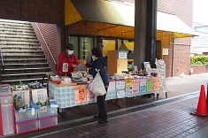

メニュー
ご紹介
こんなことをしています
- 外販部：
- 「草むらショップ」で店頭販売や地域のお祭りやイベントなどで販売活動を行っています。
- 制作室：
- 主に「草むら通信」やメンバー同人誌「夢草紙」の編集・制作、内外の印刷物制作、映像制作などを行っています。
- アート：
- 絵画などをベースとした作品制作を行っています。
特徴・方針（外販部）
草むらの会で生産している野菜類、まんじゅう、弁当、惣菜、等の販売でお客様と直接触れ合い、本格的な販売活動を行います。利用者の希望に添い、シフト制で面談を行っています。
責任者メッセージ
丹精こめて作り上げた草むらの商品はお客様から大好評です。お客様に認められ喜んでもらえることと同様に利用者さん自身も喜びを感じることが大事だと思っています。
利用者の声
店頭販売では、特に冬の寒さは大変なときもありますが、お客様と接し喜んでいただけることで達達成感が得られます。